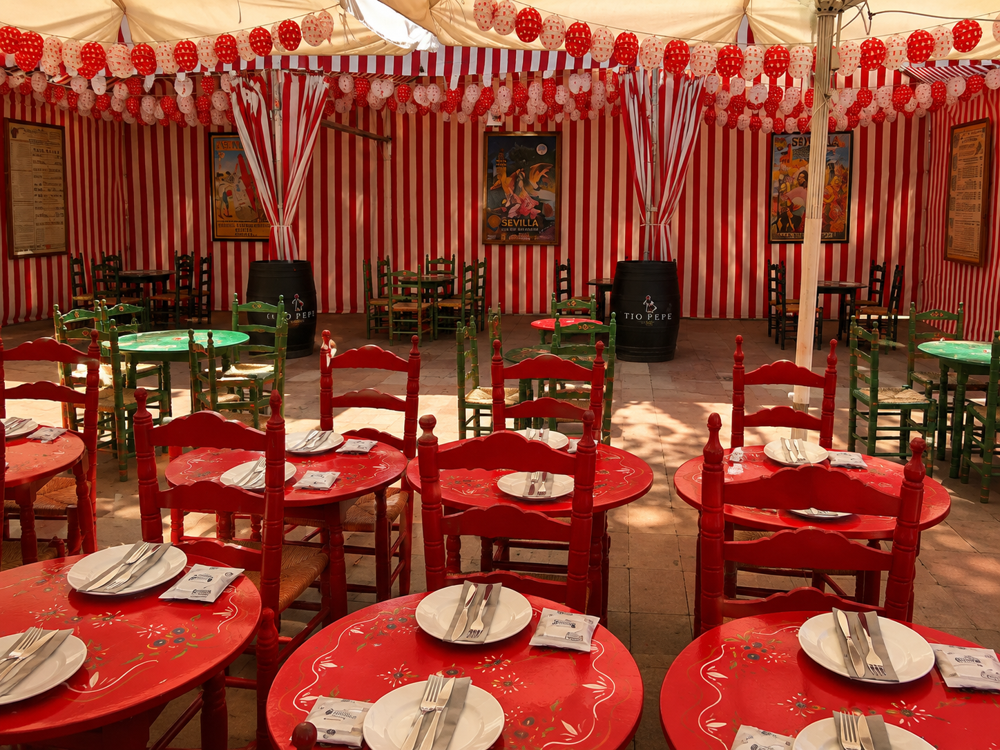

Spaniaopplevelser er mitt reisebyrå i Sevilla, med søstermerkene DMC Seville Event, Flavors of Andalucia og Sevilla Event Luxury Weddings. Ingen drømmer om å bli oppsagt. Men noen ganger er det nettopp i de øyeblikkene man ikke valgte selv, at de beste historiene begynner.
2008 – krisen som ble startskuddet
Det var ikke planen. Jeg hadde jobbet i reiseliv hele livet. Siden 2001 hadde jeg vært en del av en av Spanias største reiselivskonserner, som hadde en delegasjon her i Sevilla. Så kom 2008. Finanskrisen slo inn over Spania med en kraft få hadde forutsett, og selskapet måtte kutte. Jeg fikk tilbud om frivillig avgang. Jeg hadde to små barn hjemme – begge veldig små.
«Å sitte hjemme uten å jobbe var rett og slett ikke et alternativ. Jeg visste hva jeg kunne – og jeg bestemte meg for å bruke det.»

Fra hjemmekontor til reisebyrå
Så begynte det – sakte, forsiktig, men målrettet. Fra et lite hjemmekontor i Sevilla, med to spedbarn rundt meg, startet jeg å bygge det som skulle bli Spaniaopplevelser. Ingen stor oppstart, ingen investorer, ingen fasit. Bare kunnskap, erfaring, nettverk – og en urokkelig tro på at Spania fortjener å bli oppdaget ordentlig.
Spaniaopplevelser – for nordmenn som vil oppleve mer
I dag hjelper Spaniaopplevelser nordmenn, svensker og dansker med å oppdage Spania på ordentlig – ikke fra en standardisert charterpakke, men gjennom skreddersydde reiser med ekte innhold. Fra den baskiske gastronomihovedstaden San Sebastián i nord til det autentiske Andalucia i sør.
Det som skiller oss er ikke bare at vi kjenner Spania godt. Det er at vi bor her. Den kunnskapen kan du ikke Google deg frem til.
«Vi selger ikke turer. Vi åpner dører til et Spania de fleste aldri får se fra et hotellvindu.»
Mer enn ett byrå – fire merkevarer, én pasjon
Etter hvert som vi vokste, begynte vi å bygge egne merkevarer rettet mot ulike markeder og behov. I dag er vi fire:

Det jeg er mest stolt av
Hvis jeg ser tilbake på de drøye femten årene som har gått – er det ikke veksten eller merkene jeg er mest stolt av. Det er menneskene. Kundene som har ringt tilbake og sagt at den Spania-reisen var den beste de noensinne har hatt. Brudepar som sa at bryllupsdagen overgikk alt de hadde drømt om. Det var det jeg ville bygge – og det er det vi har gjort. Krise og alt.
Ofte stilte spørsmål
Fire merker: Spaniaopplevelser for skandinaviske reisende, DMC Seville Event for bedriftsreiser, Flavors of Andalucia for amerikanske reisende, og Sevilla Event Luxury Weddings for destinasjonsbryllup.
Amerikanske reisende som ønsker en luksuriøs og gastronomisk oppdagelse av Sevilla og Andalucia.
I Sevilla for internasjonale par, og i Alicante og Málaga for norske brudepar.